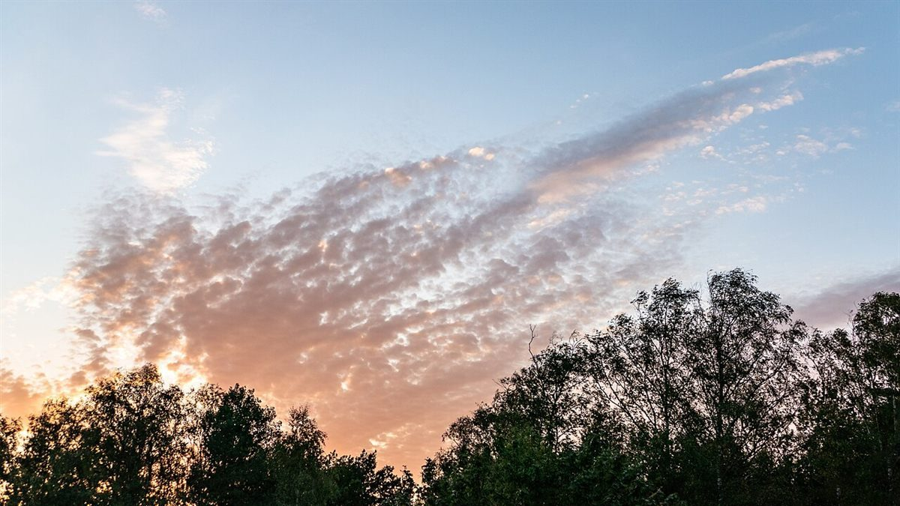
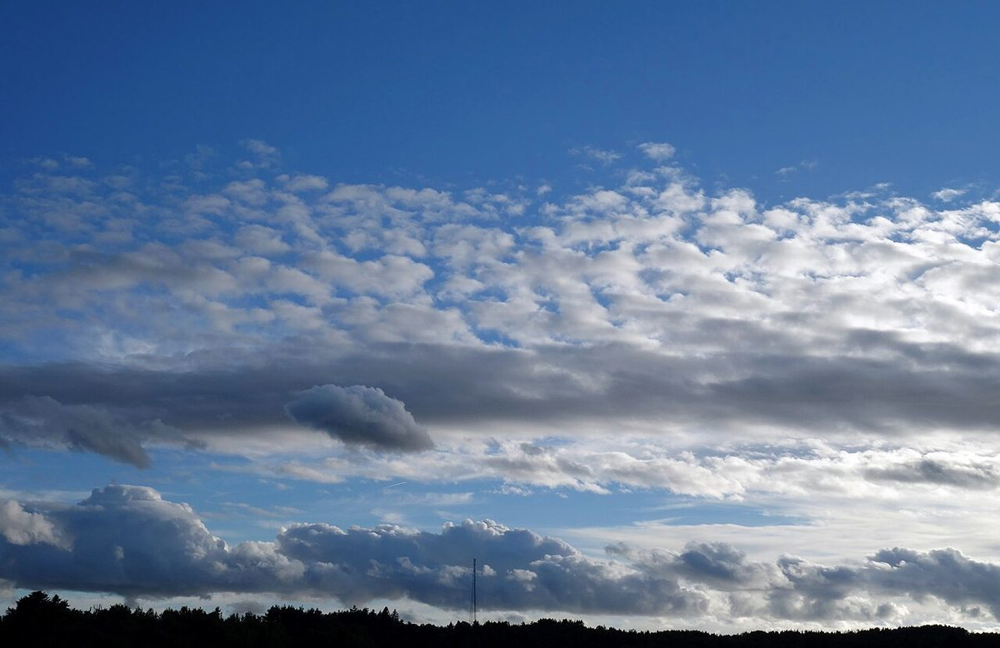
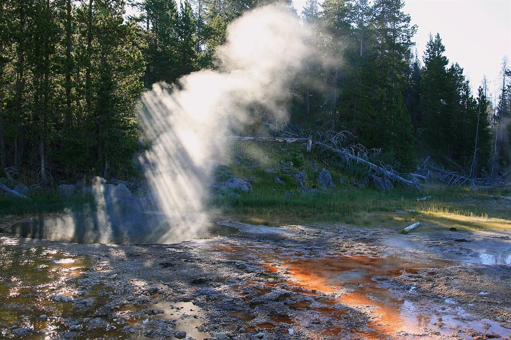

店のこと
店のこと
お店について確認できているのは、所在地とInstagramのアカウントだけです。
このページの「想像してみる」部分は、制作側が想像して書いたものです。お店の実際の様子・考え・メニューとは関係がありません。
確認できていること
- 店名は「bouffee」、業種はカフェ
- 所在地は岐阜県土岐市土岐津町土岐口１３５７−５(〒509-5122)
- 電話番号はなし。連絡はInstagramから
- 営業時間・定休日・メニュー・価格・ご予約・駐車場は準備中

想像してみる
名前の「ouf」から
由来は分かりません。制作側は、ひと息つく合図のような響きを感じて、「ふぅ」というため息を思い浮かべました。ただ、お店がその意味で名づけたかどうかは分かりません(実際のお店の姿ではありません)。


